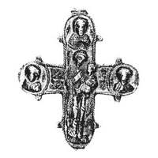

Catalog › CE-0757 · KOR2003-II.1.1.140
Valvă de revers de encolpion în relief, Maica Domnului Odighitria și sfinți în medalioane, turnare clară
sec. XI–XII (1001–1200) · loc necunoscut · Muzeul Național de Istorie al Ucrainei (NMIU), Kiev, inv. В-948
single valve of a reliquary cross, aramă; c. XI–XII (1001–1200); find spot unknown; kept at Muzeul Național de Istorie al Ucrainei (NMIU), Kiev.


Identificare
- Categorie
- Valvă izolată
- Material
- Aramă
- Tehnică
- Turnare în relief
- Dimensiuni
- Î 80 × L 71 × Gr 4 mm
Iconografie
- Revers
- Maica Domnului cu Pruncul; Neidentificat
- Descriere revers
- Valva de revers a unui encolpion în relief, cu capete rotunjite și câte două butonașe pe fiecare capăt. Pe capetele de sus și de jos ale crucii balamalele sunt rupte. Turnarea se distinge prin claritatea imaginii. Suprafața interioară are adâncituri care repetă imaginile exterioare. Pe exterior, în centrul crucii, imaginea în relief a Maicii Domnului în picioare cu Pruncul (tip Odighitria); pe capătul de sus și pe cele laterale imagini bust frontale în relief ale unor sfinți în medalioane. Conturul valvei pe exterior este încadrat de o linie îngustă în relief imitând filigranul (asemănătoare unei borduri).
- Inscripții
- I[C]/X[Θ] (în centrul crucii, la stânga Maicii Domnului); [Y] (la dreapta)
- Limba
- Greacă
Datare și atribuire
- Datare
- sec. XI–XII (1001–1200)
- Centru
- Necunoscut
- Tipologie
- Korzukhina–Peskova 2003, tip II 1 1
Descoperire
- Context
- Colecție (fără context)
Păstrare și referințe
- Colecție
- Muzeul Național de Istorie al Ucrainei (NMIU), Kiev
- Nr. inventar
- В-948
- Bibliografie
- G. F. Korzukhina, A. A. Peskova, Древнерусские энколпионы. Нагрудные кресты-реликварии XI–XIII вв., Sankt-Petersburg, 2003 [Korzukhina–Peskova 2003], p. 76, cat. nr. II 1 1/140, reprodusă la Табл. 30 (planșe, p. 272).
- Figura
- Табл. 30
- Planșe
- Korzukhina–Peskova 2003, Табл. 30 (planșă fără paginație proprie în PDF; p. 272 tipărită)
- Observații
- Datare după Peskova: sec. XI–XII. Inscripții adâncite în centrul crucii; lectura de verificat pe original. Același nr. de inventar (В-948) și aceleași dimensiuni apar la nr. 155; posibil duplicat al sursei. Coordonate: nu sunt date în sursă.
Citare: Corpus Encolpiorum, CE-0757, Valvă de revers de encolpion în relief, Maica Domnului Odighitria și sfinți în medalioane, turnare clară, https://vitaliejosanu1979-ux.github.io/primul-meu-proiect/piese/KOR2003-II.1.1.140/ (accesat 2026-10-17).